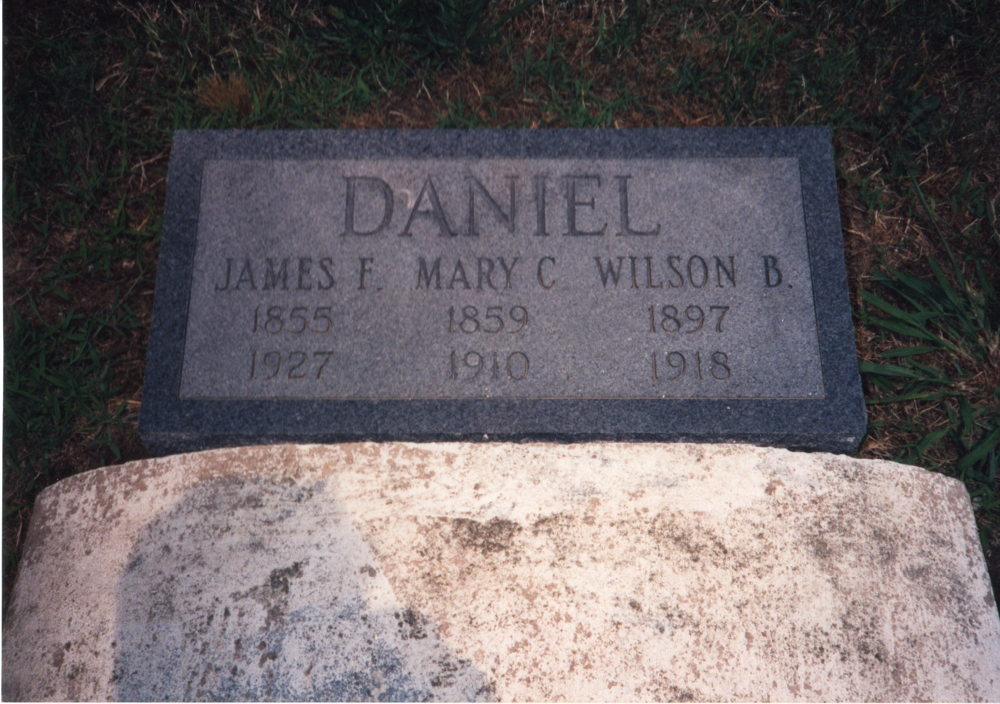

James Fairfax Daniel Sr.
1855–1927
Life Events
Born: September 25, 1855 — Deal Island, Somerset County, Maryland
Died: November 26, 1927 — Baltimore, Maryland
Family
Spouse:
Children
Military Service
No military service information has been added.
Biography
James Fairfax Daniel Sr. was born on September 25, 1855, on Deal Island in Somerset County, Maryland. Family research identifies his parents as James Travers Daniel (1830–1902) and Louisa Elizabeth Rowe (1835–after 1870). A historical marriage register records the marriage of James T. Daniel and Louisa E. Rowe on January 6, 1855. James Fairfax Daniel's 1927 death certificate identifies his mother as Louisa Thomas, creating a discrepancy with the surname Rowe that remains under investigation.
James married Mary Catherine Wilson (1859–1910), and family research identifies them as the parents of seven children, including Addie Leola Daniel (1881–1922). FamilySearch records their marriage date as December 16, but gives conflicting years of 1875 and 1876. The correct marriage year remains to be established from the original record.
James and Mary Catherine raised their family on Deal Island, Somerset County, Maryland. The 1900 United States Census records their household, including several of their children. Their daughter Addie later married William Gabriel Snead Webster (1871–1939), connecting the Daniel and Webster families.
In September 1902, James F. Daniel was named among the jurors selected from Tangier District for the October term of the Somerset Circuit Court. A newspaper article titled 'Somerset Jurors' listed him alongside three other men from the district, providing additional evidence of his connection to the Deal Island area during this period.
The 1922 Baltimore death certificate of Addie L. Webster identifies her father as James Daniel and records his birthplace as Somerset County, Maryland. This provides documentary evidence supporting Addie's relationship to the Daniel family.
Mary Catherine died in 1910. James later resided in Baltimore, Maryland, although the date of his relocation has not yet been established. His death certificate identifies him as widowed and records his occupation as watchman.
James died on November 26, 1927, in Baltimore, Maryland, at the age of 72 years, 2 months, and 1 day. His death certificate records his birth date as September 25, 1855, and identifies his father as James Daniel and his mother as Louisa Thomas, reflecting the conflicting maternal surname found in this record.
A death notice published in The Baltimore Sun on November 27, 1927, reported that James died at the residence of his daughter, Mrs. Annie W. Drake, at 22 Rueckert Avenue in the Hamilton neighborhood of Baltimore. The notice identified him as the beloved husband of the late Mary C. Daniel. His death certificate independently confirms 22 Rueckert Avenue as both his residence and place of death.
Funeral services were announced for Sunday, November 27, 1927, at 2:30 p.m., at his daughter's residence. The obituary announced interment at Deals Island, Maryland, on Monday afternoon, November 28. His death certificate records a burial date of November 27, 1927, creating a discrepancy between the two records. His gravestone is located at Saint John's Cemetery on Deal Island, where his wife Mary Catherine Wilson Daniel is also buried. The name 'Deals Island' reflects a historical form of the community's name, also remembered in family recollections.
Photos
![Photograph of the former Daniel family residence at 2010 Walbrook Avenue, Baltimore, Maryland, taken in the early 21st century. Mary Catherine Wilson Daniel (1859–1910) was living at this address when she died on October 4, 1910, according to her death notice published in The Baltimore Sun on October 5, 1910. The photograph shows the three-story rowhouse with boarded windows and doors and visible deterioration. The photograph's exact date and the building's subsequent history have not yet been established.](../photos/2010_walbrook_avenue_daniel_family_home.jpg)
Grave & Burial

Sources
-
1875 Marriage Register – James F. Daniel and Mary C. Wilson
Type: marriageHistorical marriage register containing an entry dated November 16, 1875, for James F. Daniel and Mary C. Wilson. The entry provides evidence of their marriage in Somerset County, Maryland. FamilySearch family-tree information previously listed December 16, 1875 or 1876, as their marriage date; the discrepancy should be investigated using the original marriage record and its archival citation.
Location: Somerset County, Maryland, United States
Supports: A marriage-register entry identifies James F. Daniel and Mary C. Wilson as a couple., The entry is dated November 16, 1875., The record places the marriage in Somerset County, Maryland., The marriage-register date differs from the date previously listed in FamilySearch family-tree information.
-
1900 United States Federal Census – James F. and Mary C. Daniel Family
Type: censusThe Twelfth Census of the United States, enumerated June 21, 1900, records James F. Daniel (age 45) and his wife Mary C. Daniel (age 40) in Tangier District, Somerset County, Maryland, Enumeration District 81, sheet 22. Their household, appearing on lines 13–19, includes five children: Isadora F. Daniel (age 19), Kittie W. Daniel (age 16), James F. Daniel (age 14), Annie W. Daniel (age 12), and Wilson B. Daniel (age 2). Their daughter Addie Leola Daniel Webster was already married and appears with her husband Snead Webster in a separate household in the 1900 census.
Location: Tangier District, Somerset County, Maryland, United States
Supports: James F. Daniel and Mary C. Daniel were recorded as husband and wife in 1900., James F. Daniel was recorded as 45 years old., Mary C. Daniel was recorded as 40 years old., Isadora F. Daniel was recorded as their daughter, age 19., Kittie W. Daniel was recorded as their daughter, age 16., James F. Daniel was recorded as their son, age 14., Annie W. Daniel was recorded as their daughter, age 12., Wilson B. Daniel was recorded as their son, age 2., The Daniel family resided in Tangier District, Somerset County, Maryland, in June 1900.
-
1902 Somerset Jurors – James Fairfax Daniel
Type: newspaperNewspaper article titled 'Somerset Jurors,' dated September 1, 1902, reporting the selection of jurors for the October term of the Somerset Circuit Court. The article, identified as a special dispatch to The Baltimore Sun from Princess Anne, Maryland, states that Judge Henry Page drew the jurors. James F. Daniel is listed among four men selected from Tangier District, along with Thomas P. Bradshaw, John M. Wilson, and Theodore Tarlton. The original newspaper in which this clipping appeared has not yet been independently identified.
Location: Somerset County, Maryland, United States
Supports: James F. Daniel was listed among the jurors selected for the October 1902 term of the Somerset Circuit Court., James F. Daniel was associated with Tangier District, Somerset County, Maryland, in 1902., The juror selection was reported in a newspaper article dated September 1, 1902.
-
1927 Maryland Death Certificate – James Fairfax Daniel Sr.
Type: death_certificateMaryland death certificate recording the death of James Fairfax Daniel on November 26, 1927, at 22 Rueckert Avenue in Baltimore, Maryland. The certificate records his birth as September 25, 1855, on Deal Island, Somerset County, Maryland, and identifies him as a widowed watchman. His father is listed as James Daniel and his mother as Louisa Thomas. Family research identifies his parents as James Travers Daniel and Louisa Elizabeth Rowe. An 1855 marriage register documents the marriage of James T. Daniel and Louisa E. Rowe, although further evidence is needed to resolve the discrepancy in the mother's surname. The death certificate records burial at 'Deals Island, Somerset, Md.' on November 27, 1927. His gravestone is located at Saint John's Cemetery on Deal Island, Maryland.
Location: Baltimore, Maryland, United States
Supports: James Fairfax Daniel died on November 26, 1927, in Baltimore, Maryland., His death certificate records his birth date as September 25, 1855., His birthplace was recorded as Deal Island, Somerset County, Maryland., His occupation was recorded as watchman., His marital status was recorded as widowed., The certificate identifies his father as James Daniel., The certificate identifies his mother as Louisa Thomas, conflicting with family research identifying Louisa Elizabeth Rowe., Burial was recorded at Deals Island, Somerset County, Maryland, on November 27, 1927.
-
1927 Death Notice – James Fairfax Daniel – The Baltimore Sun
Type: obituaryDeath notice published in The Baltimore Sun on November 27, 1927, reporting that James F. Daniel died on the morning of November 26, 1927, at the residence of his daughter, Mrs. Annie W. Drake, 22 Rueckert Avenue, Hamilton, Baltimore. He is identified as the beloved husband of the late Mary C. Daniel. Funeral services were announced for Sunday, November 27, at 2:30 p.m., at his daughter's residence, with interment at Deals Island, Maryland, on Monday afternoon, November 28. The obituary's announced burial date differs from the date previously read on his death certificate.
Location: Baltimore, Maryland, United States
Supports: James F. Daniel died on November 26, 1927., He died at the residence of his daughter, Mrs. Annie W. Drake., His daughter resided at 22 Rueckert Avenue in Hamilton, Baltimore., His wife, Mary C. Daniel, predeceased him., Funeral services were scheduled for November 27, 1927, at 2:30 p.m., Interment was announced for Monday afternoon, November 28, 1927, at Deals Island, Maryland.